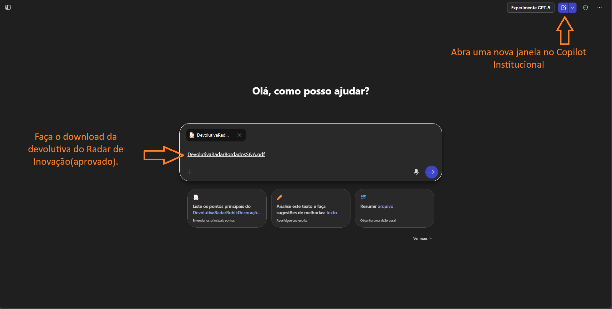
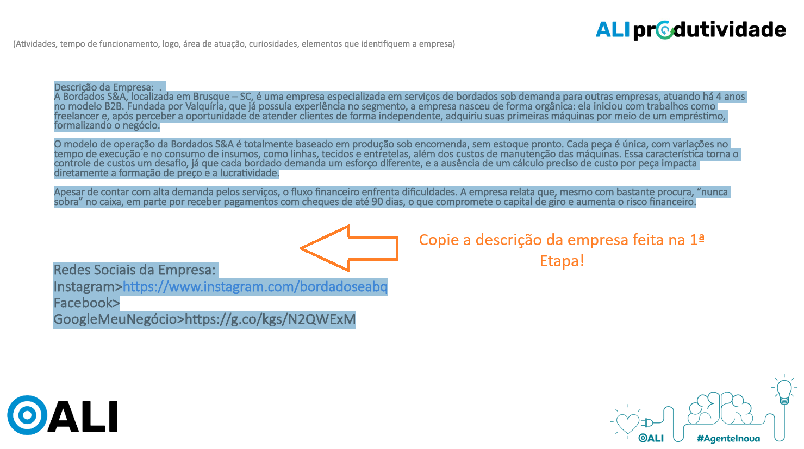

2° Prompt | Preparatório Etapa 3 Nomear
Objetivo: Preparar a devolutiva apurada pelo Radar de Inovação e ajudar na escolha da priorização do desafio no 3° encontro com o empresário.
1° Passo: Abrir nova conversa na Copilot, fazer o download da Devolutiva do Radar na janela e seguir para o segundo passo.

2° Passo: Copiar o briefing com a descrição da empresa coletado na 1ª etapa, bem como sites e redes sociais, colar na janela do Copilot e seguir para o próximo passo.

3° Passo: Copiar o prompt abaixo e colar na conversa do Copilot, juntamente com os passos anteriores, e clicar em "OK".
PROMPT PREPARATÓRIO – ETAPA 3 | ANÁLISE E PRIORIZAÇÃO DOS DESAFIOS. Atue como consultor sênior em produtividade, gestão empresarial e inovação, alinhado à metodologia do Sebrae e ao Projeto ALI Produtividade... ...mais

Equipe ALI-SC